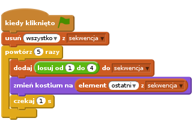
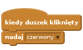
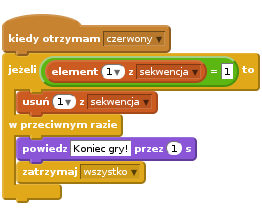
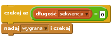
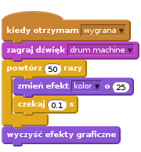
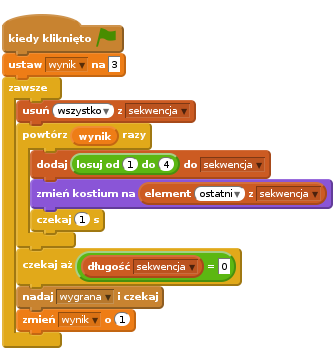
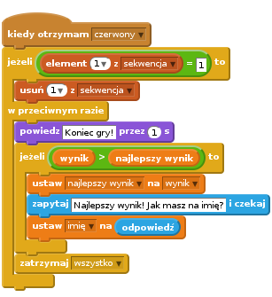

Heads Up!
This project is new. That means we’re still testing it, and there’s a small chance there could be some bugs or typos. If you’re a club leader trying out this project, please complete this short questionnaire (or email ) to let us know how it went!
Projekt stworzony przez społeczność
Ten projekt stworzył Erik wraz ze swoją córką Ruth. Jeśli też chcesz podzielić się swoim projektem odwiedź nas na GitHubie.
Wstęp
Ten projekt polega na stworzeniu gry pamięciowej. Będziesz musiał zapamiętać w jakiej kolejności pokazały się kolory, a następnie powtórzyć tę kolejność.

Krok 1: Losowe kolory
Najpierw stwórzmy postać, która będzie losowo zmieniać kolor. Gracz będzie musiał zapamiętać kolejność tych kolorów.
Zadania do wykonania
Stwórz nowy projekt i usuń duszka-kota, aby projekt był pusty.
Wybirz postać i tło gry. Postać nie musi być osobą, ale powinna wyglądać tak, by mogła zmieniać kolory.

W grze będziemy używać różnych liczb, które będą odpowiadać poszczególnym kolorom:
- 1 = czerwony,
- 2 = niebieski,
- 3 = zielony,
- 4 = żółty.
Dodaj do twojej postaci kostiumy w taki sposób, by razem było ich 4 - jeden kostium dla każdego koloru. Upewnij się, że kostiumy są ustawione w odpowiedniej kolejności (takiej jak na liście kolorów).

Aby kolejność kolorów była losowa trzeba stworzyć listę. Lista to po prostu zmienna, w której przechowywane są informacje w odpowiedniej kolejności. Stwórz nową listę i nazwij ją
sekwencja. Tej listy będzie potrzebować tylko twoja postać, więc możesz też zaznaczyć ‘Tylko dla tego duszka’.
Teraz lista powinna się pojawić w lewym górnym rogu sceny. Powinny się też pojawić nowe bloki, które pozwolą ci użyć stworzonej właśnie listy.

Dodaj ten skrypt do twojej postaci, aby dodać losową liczbę do listy (i aby pokazać odpowiedni kostium) 5 razy:

Zauważ, że na początku cała lista została wyczyszczona.
Wyzwanie: Dodanie dźwięku
Przetestuj kilka razy swój projekt. Pewnie zauważysz, że czasami losowany jest ten sam kolor dwa (albo więcej) razy pod rząd, przez co trudniej jest zapamiętać kolejność. Czy możesz sprawić, aby przy każdej zmianie kostiumu zagrał bęben?
A może każdy kolor powinien mieć swój dźwięk? Będzie to bardzo podobne do bloku, który zmienia kostium twojej postaci.
Zapisz swój projekt
Krok 2: Powtarzanie sekwencji
Dodaj 4 przyciski, które będzie naciskał gracz powtarzając w ten sposób kolejność kolorów, którą zapamiętał.
Zadania do wykonania
Dodaj do projektu 4 duszki, które będą przyciskami. Zmień każdy z duszków w taki sposób, by każdy z nich odpowiadał jednemu z czterech kolorów.

Kiedy zostanie kliknięty czerwony bęben musisz nadać wiadomość do twojej postaci, aby wiedziała, że czerwony przycisk został naciśnięty. Dodaj ten kod do czerwonego bębna:

Kiedy postać otrzyma wiadomość, powinna sprawdzić, czy liczba 1 jest pierwsza na liście (co znaczy, że czerwony to następny kolor w sekwencji). Jeśli tak, możesz usunąć tę liczbę z listy, ponieważ gracz zgadł poprawnie. W przeciwnym razie gra się kończy!

Możesz także wyświetlić jakieś migające światła kiedy lista będzie pusta. Pusta lista oznacza, że gracz zapamiętał poprawnie całą sekwencję kolorów. Dodaj poniższy kod na końcu skryptu rozpoczynającego się od
kiedy kliknięto zieloną flagę:
Kliknij na scenę i dodaj poniższy kod, aby tło zmieniało kolor, kiedy gracz wygra grę:

Wyzwanie: Dodanie 4 przycisków
Powtórz powyższe kroki dla niebieskiego, zielonego i żółtego przycisku. Które bloki pozostaną takie same, a które trzeba będzie zmienić dla każdego przycisku?
Możesz też dodać dźwięk, który będzie zagrany po naciśnięciu każdego przycisku.
Pamiętaj, aby przetestować kod, który właśnie dodałeś! Czy potrafisz zapamiętać sekwencję pięciu kolorów? Czy sekwencja jest inna za każdym razem?
Zapisz swój projekt
Krok 3: Wiele poziomów
Na razie gracz musi tylko zapamiętać 5 kolorów. Ulepsz swoją grę w taki sposób, by długość sekwencji wzrastała.
Zadania do wykonania
Stwórz nową zmienną i nazwij ją
wynik.
wynikbędzie używany, by zdecydować jakiej długości będzie sekwencja, którą musi zapamiętać gracz. Na początek ustawmy wynik (i długość sekwencji) na 3. Dodaj poniższy blok kodu na początek skryptu zaczynającego się odkiedy kliknięto zieloną flagę:Zamiast za każdym razem tworzyć sekwencję 5 kolorów, teraz chcemy by zmienna
wynikwyznaczyła długość sekwencji. Zmień blokpowtórzw twojej postaci (który tworzy sekwencję) na poniższy:Jeśli sekwencja została poprawnie odgadnięta, powinieneś dodać 1 do wyniku, by zwiększyć długość sekwencji.
Na koniec, musisz dodać pętlę
zawszewokół kodu, który generuje sekwencję. W ten sposób sekwencja będzie tworzona dla każdego poziomu. Tak powinien wyglądać kod twojej postaci:
Daj swoim znajomym przetestować twoją grę. Pamiętaj by ukryć listę
sekwencjazanim zaczną grać!
Zapisz swój projekt
Krok 4: Najlepszy wynik
Zapiszmy najlepszy wynik, abyś mógł rywalizować z twoimi znajomymi.
Zadania do wykonania
Dodaj dwie nowe zmienne do projektu i nazwij je
najlepszy wynikiimię.Kiedy gra się skończy (gdy gracz wybierze nieprawidłowy przycisk), musisz sprawdzić czy wynik grającego jest wyższy niż aktualny najwyższy wynik. Jeśli tak, musisz zapisać jego wynik jako najlepszy wynik i zachować imię gracza. Tak powinien powinien wyglądać skrypt czerwonego przycisku:

Powinieneś dodać nowy kod także do trzech pozostałych przycisków! Czy zauważyłeś, że fragment kodu z blokiem “Koniec gry” w każdym z czterech przycisków jest identyczny?

Jeśli będziesz chciał zmienić ten fragment, np. dodając dźwięk albo zmieniająć tekst “Koniec gry!”, będziesz musiał zmienić to cztery razy! To na pewno uciążliwe, a poza tym to strata czasu.
Zamiast tego, możesz zdefiniować własny blok i użyć go w swoim projekcie! Aby to zrobić kliknij na
Więcej bloków, a następnieStwórz blok. Nowy blok nazwij “Koniec gry”.
Do nowego bloku dodaj kod, który do tej pory był umieszczony pod blokiem
w przeciwnym razie:
Właśnie stworzyłeś nową funkcję, która nazywa się
Koniec gry. Możesz jej użyć gdzie tylko chcesz. Przeciągnij blokKoniec grydo czterech skryptów przycisków.
Teraz dodaj dźwięk, który usłyszy gracz po wciśnięciu złego przycisku. Musisz dodać ten kod tylko raz w bloku
Koniec gry, a nie cztery razy w każdym z przycisków!
Wyzwanie: Stwórz nowe bloki
Zauważyłeś inne fragmenty kodu, które powtarzają się w każdym z czterech przycisków?

Czy możesz stworzyć inny wspólny blok, który będzie używany przez wszystkie przyciski?
Zapisz swój projekt
Wyzwanie: Końcowy kostium
Czy zauważyłeś, że na początku gry postać ma jeden z czterech kolorów, a na koniec, gdy gracz powtarza sekwencję, zawsze ma ostatni kolor z sekwencji?
Czy możesz dodać swojej postaci inny, biały kostium, który będzie wyświetlany na początku gry i wtedy, gdy gracz próbuje odgadnąć kolejność kolorów?

Zapisz swój projekt
Wyzwanie: Poziom trudności
Możesz udostępnić graczowi wybór jednego poziomu trudności: “prosty” (dostępne są tylko bębny czerwony i niebieski), “normalny” (wszystkie cztery bębny).
Możesz nawet dodać poziom “trudny”, gdzie do dyspozycji będzie jeszcze piąty bęben!